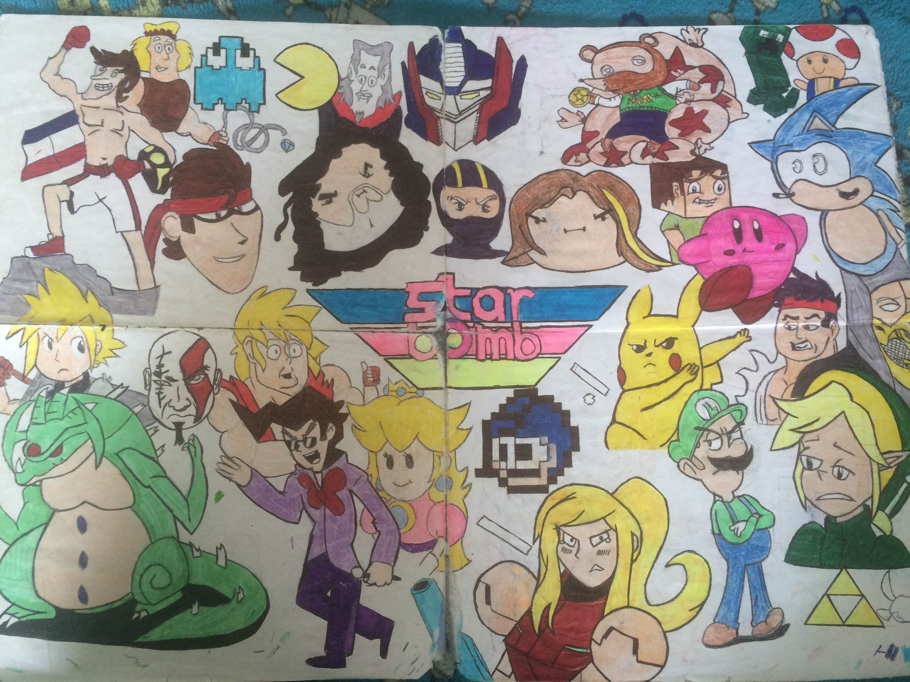

from the hands and mind of the man in the shadows
If you are reading this that means that you have reached the realm of the Internet Zone known simply as the Sketchy Sketches. As a wise person or scholor said a very long time ago "a picture is worth a thousand words" so here are some the pieces and sketches that I have created in the past with some of them completed and some that are still in progress.
the pieces:

This was one of my recent pieces that I have made, which was based on a still from an animated music video from one of my favourite bands, that was amazingly animated and looked something out of a fairytale.

This was a quick little piece I made a while back based on the character Groot from Marvel's Guardians of the Galaxy.

This was another one that was created recently of the most known Pokémon in his other form as a detective with a caffine addiction.
This was one of the very first pieces that I created that took me over the span of two years to fully complete, which has a culmination of different art styles and based on at least one character from each of their songs from their first two albums. I may remake this one on an even larger page to add many more characters from the songs as well as the new ones from their new album just recently released
This was based on one of the shots of the opening scenes from the recent movie adaption of Stephen King's IT, reworked into an animated style of sketch.
This sketch was based on a character from one of the most overlooked video games of the last 5 years known as Little Nightmares, showing the main character known as Six and the little companions known as the Nomes.

This was another recent image that I have sketched based on another recent sketch already shown (a lover's dance) of the Princess, with it more focused on her and showing her in more detail of her beauty
this is one of the images that is still in the process of being finished off. This is based on a youtube channel with their animated funny moments compilation.

this is another sketch that is still in the process of being completed. This is based on a group of youtubers that are known to play video games together and is based on some of their animated moments.

This is one more of my sketches that are left to be finished off. This is another sketch based on another different video game based on the four main characters that are in the game in a somewhat what if situation.